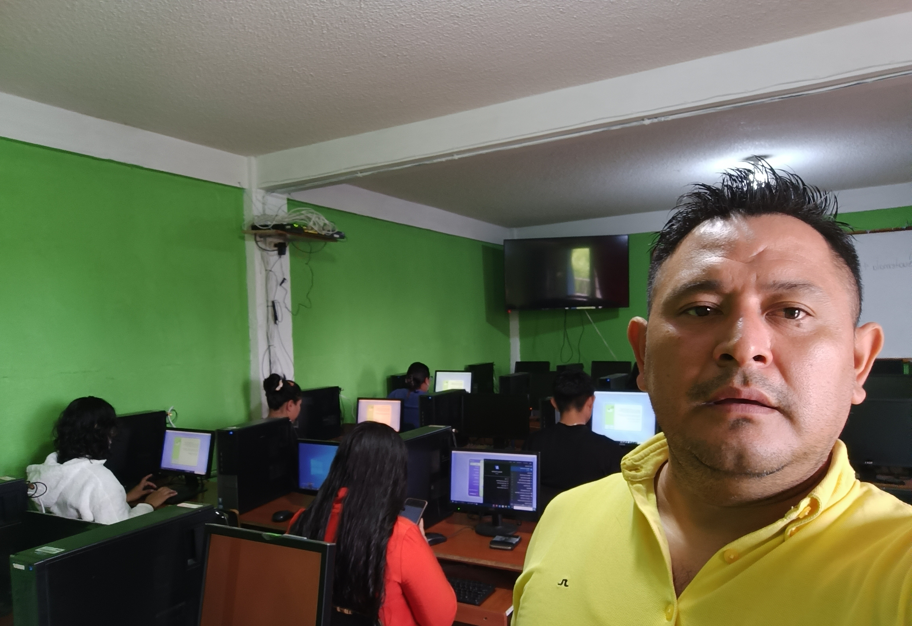
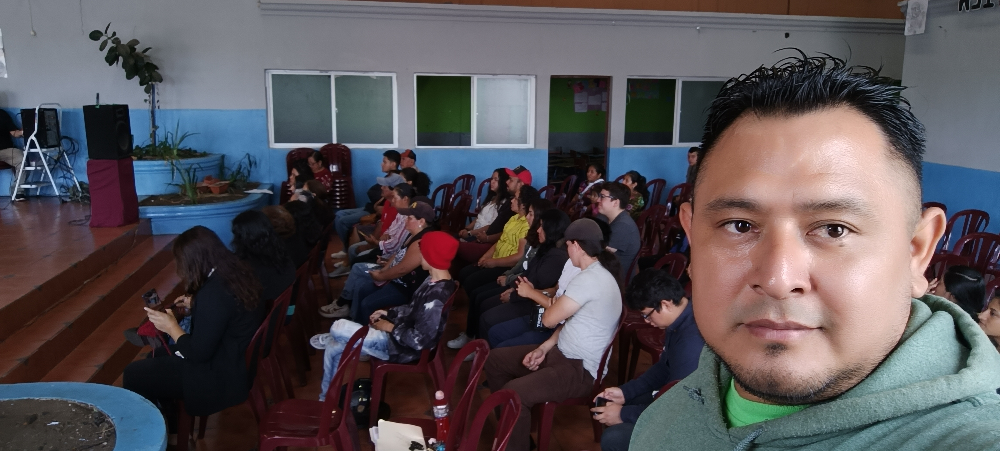
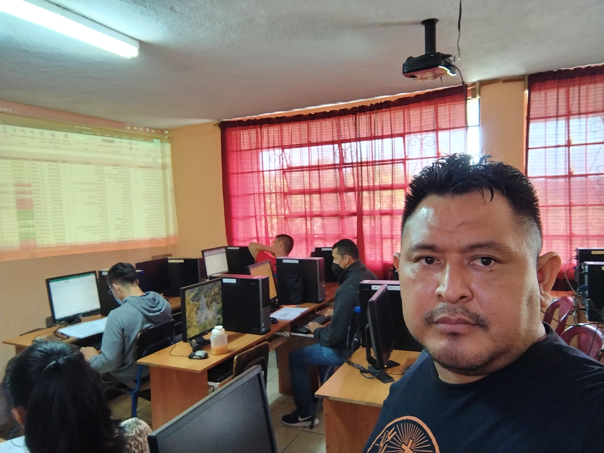
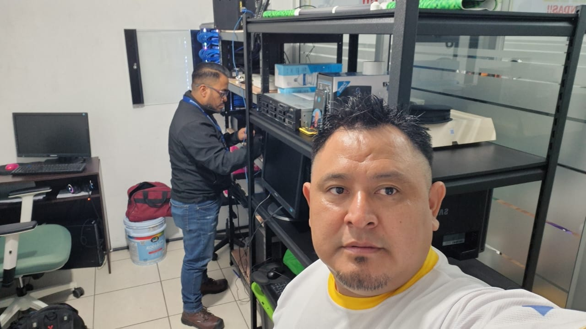

Hans Higueros
Habilidades
Mi conjunto de habilidades integra una sólida base técnica en infraestructura, redes y administración de sistemas, con un enfoque práctico orientado a la resolución de problemas y la mejora continua. A lo largo de mi trayectoria, he desarrollado experiencia en entornos de telecomunicaciones, configuración de redes cableadas e inalámbricas, gestión de servidores Linux y Windows, así como en la implementación de soluciones de Voz IP y tecnologías Cisco, adaptándome con facilidad a distintos escenarios y desafíos tecnológicos.
Más allá del ámbito técnico, complemento estas capacidades con habilidades de comunicación, liderazgo y formación, lo que me permite no solo diseñar e implementar soluciones eficientes, sino también compartir conocimiento de manera efectiva. Mantengo un firme compromiso con el desarrollo de la sociedad a través de la educación tecnológica, participando en la formación de personas de distintas edades y niveles, convencido de que el acceso al conocimiento es una herramienta clave para generar oportunidades y crecimiento profesional.
Nivel de dominio y competencias profesionales
| Habilidades Técnicas | Dominio (%) | Habilidades Blandas | Dominio (%) |
|---|---|---|---|
| Redes y telecomunicaciones | 90% | Resolución de problemas | 90% |
| Administración de servidores | 85% | Comunicación efectiva | 85% |
| Cableado estructurado | 80% | Liderazgo técnico | 80% |
| Telefonía VoIP | 95% | Trabajo en equipo | 92% |
| Virtualización (VMware/Hyper-V) | 80% | Adaptabilidad | 85% |
| Redes inalámbricas (WiFi) | 95% | Capacidad de enseñanza | 95% |



